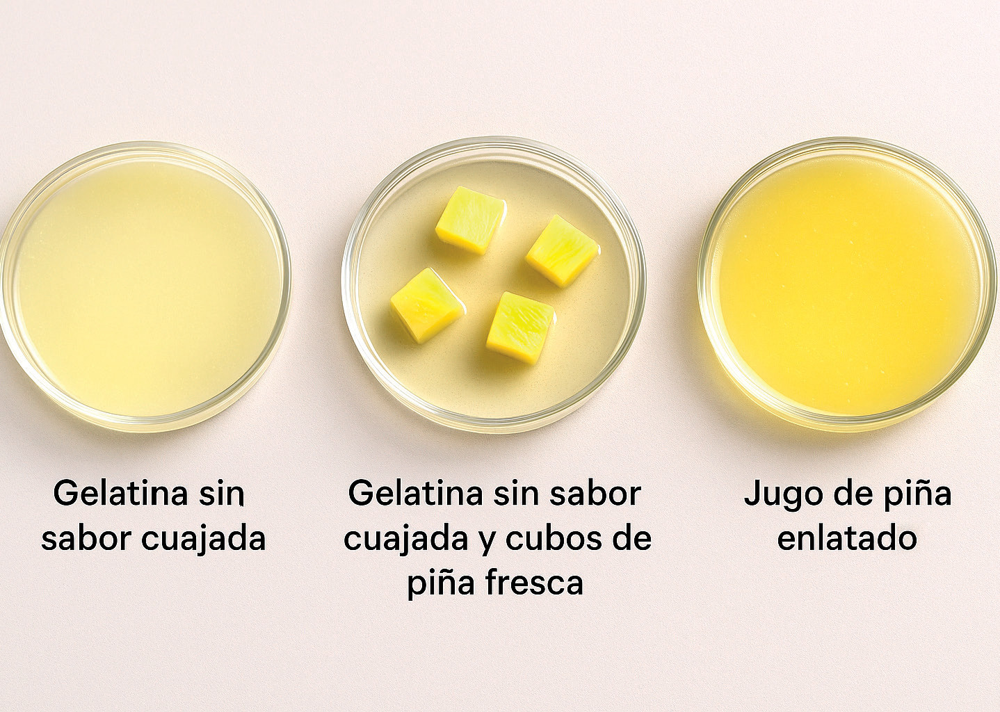

1. ¿Cómo crees que tu elección de alimentos en el día a día impacta directamente en el funcionamiento de tu sistema digestivo y, por ende, en tu energía y bienestar?
2. ¿Qué les hace pensar esto sobre la frase “eres lo que comes” y cómo el cuerpo realmente aprovecha o no los nutrientes de lo que consumen?
3. ¿Qué tan conscientes eran de todo el trabajo que realiza su sistema digestivo antes de esta lectura? ¿Ha cambiado su perspectiva sobre la importancia de la nutrición de su cuerpo?
La experimentación es un método científico fundamental que consiste en manipular variables en condiciones controladas para observar sus efectos y establecer relaciones de causa y efecto.
Se emplea en casi todas las áreas del conocimiento, desde la Física y la Medicina hasta las Ciencias Sociales y la ingeniería, permitiendo comprobar hipótesis, generar nuevo conocimiento y resolver problemas. Su principal propósito es validar teorías, optimizar procesos y comprender el funcionamiento del mundo, buscando resultados fiables y reproducibles que impulsen el avance de la ciencia y la tecnología.

Con el marcador etiqueten cada placa Petri.Evalúa tu trabajo según los criterios y completa la tabla.